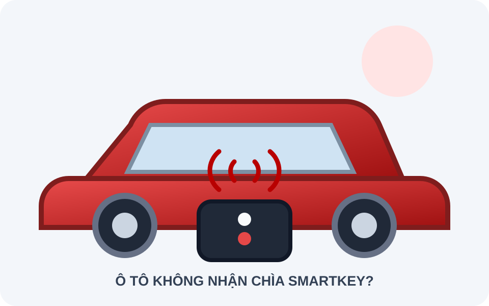

Làm chìa khóa ô tô và mở cửa xe ô tô tại Cẩm Phả

Xe bị khóa cửa, chìa khóa để quên bên trong hoặc điều khiển không hoạt động có thể khiến bạn lỡ công việc. THỢ KHÓA LƯU ĐỘNG tiếp nhận trao đổi hai nhu cầu thường gặp: làm chìa khóa ô tô khi mất chìa hoặc cần chìa dự phòng, và mở cửa xe ô tô khi quên chìa trong xe. Dịch vụ được xác nhận theo hãng xe, dòng xe, đời xe, vị trí xe và khả năng phục vụ thực tế tại Cẩm Phả cùng khu vực lân cận. Hãy gọi để mô tả tình trạng và trao đổi phương án trước khi thợ di chuyển.
GỌI THỢ KHÓA: 090 402 6204Ô tô không nhận chìa Smartkey?
Xem các dấu hiệu thường gặp và những bước kiểm tra an toàn trước khi yêu cầu hỗ trợ.
Làm chìa khóa ô tô tại Cẩm Phả khi mất chìa hoặc cần chìa dự phòng
Nếu bạn cần làm chìa khóa ô tô mới, làm thêm chìa dự phòng hoặc đã mất toàn bộ chìa, hãy cung cấp thông tin xe để kiểm tra khả năng tiếp nhận. Chìa cơ, chìa remote và Smartkey có cấu tạo, cách nhận diện và yêu cầu kỹ thuật khác nhau; không nên mặc định mọi dòng xe đều có cùng cách làm.
- Hãng xe, tên dòng xe và năm sản xuất nếu biết.
- Loại chìa đang dùng: chìa cơ, remote hay Smartkey.
- Bạn còn chìa dự phòng hay đã mất hết chìa.
- Vị trí xe đang đỗ và tình trạng xe hiện tại.
Trường hợp mất hết chìa, xem thêm hướng dẫn chuẩn bị khi mất toàn bộ chìa khóa ô tô tại Cẩm Phả. Trước khi đặt lịch, hãy xác nhận khả năng hỗ trợ, giấy tờ cần chuẩn bị và chi phí dự kiến qua điện thoại 090 402 6204.
Khi xe vẫn còn một chìa, có nên làm thêm chìa dự phòng?
Nếu xe vẫn sử dụng được chìa hiện tại, bạn có thể chủ động hỏi về phương án làm thêm chìa khóa ô tô dự phòng trước khi chìa duy nhất bị thất lạc hoặc hư hỏng. Khả năng thực hiện và loại chìa phù hợp phụ thuộc hãng xe, dòng xe, đời xe và hệ thống chống trộm.
Khi liên hệ, hãy cho biết bạn còn bao nhiêu chìa đang hoạt động, chìa là loại cơ, remote hay Smartkey, và chuẩn bị thông tin xác minh quyền sử dụng xe khi cần. Tham khảo thêm hướng dẫn khi mất hết chìa khóa ô tô nếu bạn đang không còn chìa nào.
Mở cửa xe ô tô khi quên chìa trong xe
Trường hợp cửa xe đã khóa nhưng chìa vẫn nằm trong khoang xe, hãy tránh tự cạy cửa, chèn vật cứng vào khe kính hoặc kéo mạnh tay nắm. Những thao tác này có thể làm hỏng gioăng, kính, sơn hoặc cơ cấu khóa. Bạn có thể đọc hướng dẫn xử lý khi quên chìa khóa trong xe ô tô tại Cẩm Phả trước khi liên hệ.
Khi gọi, hãy nói rõ chìa đang ở trong xe, xe đang ở đâu, hãng và dòng xe nếu biết, đồng thời thông báo nếu có trẻ nhỏ, người cần trợ giúp hoặc vật nuôi bên trong. Nếu có nguy cơ mất an toàn cho người hoặc vật nuôi, hãy gọi lực lượng cứu hộ hoặc dịch vụ khẩn cấp tại địa phương ngay.
Các sự cố khóa ô tô thường gặp
- Cửa ô tô bị khóa khi chìa vẫn ở bên trong xe.
- Chìa khóa hoặc điều khiển ô tô bị mất, hỏng hay hoạt động chập chờn.
- Chìa khóa thông minh không nhận hoặc không mở được cửa.
- Khóa cửa ô tô gặp trục trặc trong quá trình sử dụng.
Hỗ trợ tại Cẩm Phả và khu vực lân cận
Phục vụ theo địa điểm và tình trạng thực tế tại Cẩm Phả, Vân Đồn, Cửa Ông, Mông Dương, Quang Hanh, Quảng Yên, Tiên Yên, Đầm Hà và Hải Hà. Thời gian có mặt phụ thuộc vị trí, giao thông và lịch tiếp nhận; vui lòng gọi để xác nhận.
Cần hỗ trợ mở khóa cửa ô tô?
Khi liên hệ, bạn có thể cho biết vị trí hiện tại, dòng xe và tình trạng đang gặp phải để được trao đổi hướng xử lý phù hợp.
GỌI 090 402 6204Quy trình trao đổi hỗ trợ khóa ô tô
1. Mô tả tình trạng xe
Cho biết hãng xe, dòng xe, đời xe nếu biết; cửa bị khóa, chìa để bên trong hay điều khiển không phản hồi.
2. Xác nhận vị trí và phương án
Cung cấp địa điểm xe đang đỗ và trao đổi phương án dự kiến, thời gian di chuyển cùng chi phí trước khi đồng ý.
3. Chuẩn bị xác nhận quyền sử dụng xe
Chuẩn bị giấy tờ hoặc thông tin phù hợp để xác nhận quyền sử dụng hợp pháp khi cần. Không tự cạy cửa vì có thể làm hỏng kính, gioăng hoặc hệ thống khóa.
Khi bị khóa ngoài ô tô, cần ưu tiên điều gì?
Giữ bình tĩnh và kiểm tra các dấu hiệu an toàn
Xác định xe đang đỗ ở vị trí an toàn hay không, chìa khóa ở đâu và cửa nào đang khóa. Không cố cạy cửa, chèn thanh kim loại hoặc dùng vật cứng vì có thể gây hư hỏng.
Nếu có trẻ nhỏ, người cần trợ giúp hoặc vật nuôi bị mắc kẹt
Nếu bên trong xe có người đang gặp nguy hiểm do nóng, thiếu không khí hoặc tình trạng khẩn cấp khác, hãy gọi ngay lực lượng cứu hộ hoặc dịch vụ khẩn cấp tại địa phương; đừng chỉ chờ thợ khóa đến.
Chuẩn bị thông tin để trao đổi nhanh
Cho biết vị trí xe, hãng và dòng xe, chìa đang ở trong xe hay bị mất, điều khiển có phản hồi không. Chuẩn bị giấy tờ hoặc thông tin phù hợp để xác nhận quyền sử dụng xe khi được yêu cầu.
Làm chìa khóa ô tô tại Cẩm Phả khi mất chìa
Nếu cần làm chìa khóa ô tô mới hoặc chìa dự phòng, hãy gọi trao đổi trước để xác nhận khả năng hỗ trợ theo hãng xe, dòng xe, đời xe và loại chìa đang sử dụng. Không phải mọi hệ thống chìa cơ, remote và smartkey đều dùng chung một phương án.
- Cho biết hãng xe, dòng xe và năm sản xuất nếu biết.
- Nói rõ còn chìa dự phòng hay đã mất toàn bộ chìa.
- Mô tả biểu hiện của remote hoặc smartkey nếu xe không nhận chìa.
- Chuẩn bị giấy tờ liên quan để xác minh quyền sử dụng xe khi cần.
Trước khi thợ di chuyển, hãy xác nhận khả năng làm chìa, thời gian dự kiến và chi phí. Liên hệ 090 402 6204 để trao đổi.
Câu hỏi thường gặp về làm chìa và mở khóa ô tô tại Cẩm Phả
Xe bị khóa khi chìa còn ở bên trong thì nên làm gì?
Không nên cố nạy cửa hoặc dùng vật cứng chèn vào khe cửa vì có thể làm hỏng gioăng, kính hoặc hệ thống khóa. Hãy gọi và mô tả dòng xe, vị trí xe cùng tình trạng chìa khóa.
Cần cung cấp thông tin gì khi gọi?
Nếu biết, hãy cho biết hãng xe, dòng xe, đời xe, xe đang ở đâu và bạn còn chìa dự phòng hay không. Những thông tin này giúp trao đổi phương án phù hợp hơn.
Chi phí mở khóa ô tô là bao nhiêu?
Chi phí phụ thuộc loại xe, tình trạng khóa, phương án xử lý và địa điểm. Hãy mô tả rõ sự cố và xác nhận chi phí dự kiến trước khi đồng ý thực hiện.
Có thể làm chìa khóa ô tô khi mất hết chìa không?
Khả năng làm lại phụ thuộc hãng xe, dòng xe, đời xe và hệ thống chìa. Hãy cung cấp thông tin xe và xác nhận khả năng hỗ trợ trước khi đặt lịch.
Cần chuẩn bị gì khi muốn làm thêm chìa khóa ô tô?
Cho biết hãng xe, dòng xe, năm sản xuất nếu biết, loại chìa đang sử dụng và vị trí xe. Chuẩn bị giấy tờ hoặc thông tin phù hợp để xác minh quyền sử dụng xe khi cần.
Xe còn một chìa đang sử dụng thì có thể làm thêm chìa dự phòng không?
Khả năng làm thêm phụ thuộc hãng xe, dòng xe, đời xe và hệ thống chìa. Hãy cung cấp thông tin xe, loại chìa hiện có và xác nhận phương án, chi phí dự kiến trước khi đặt lịch.